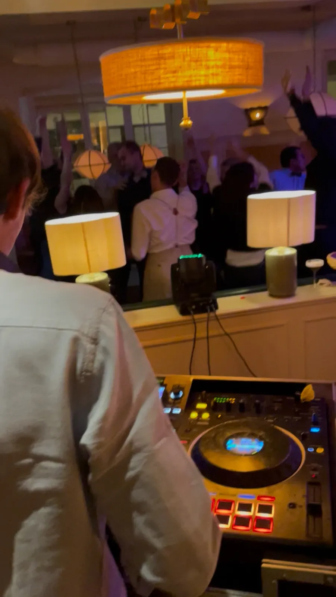

Guides pratiques pour vos événements.
Comparatif acheteur 2026, dimensionnement acoustique, arbitrage entre location autonome et prestation DJ, sonorisation de châteaux, séminaires ou grandes jauges : retrouvez l'ensemble de nos fiches pratiques rédigées à partir de +120 événements réalisés à Paris et dans toute la France.
Nos fiches et comparatifs techniques
Des réponses concrètes et vérifiables pour préparer un mariage, un séminaire d'entreprise, un rallye ou une soirée privée.

Choisir son DJ & sa sono (Comparatif 2026)
Tableau comparatif entre DJ indépendant, grande agence événementielle et maison technique propriétaire de son parc L-Acoustics.
Lire le comparatif 2026
Location de sono ou prestation DJ
Comment arbitrer entre la location autonome (60 € à 300 €) et l'accompagnement complet avec DJ, montage anticipé et secours technique.
Lire le comparatif
Puissance sonore & jauge (40 à 600 invités)
Pourquoi les watts RMS comptent davantage que les watts crête et quel système L-Acoustics choisir selon le nombre d'invités.
Lire le guide
Châteaux, péniches, orangeries & jardins
Multi-zones cérémonie/cocktail/piste, limiteurs sonores, câbles dissimulés et projecteurs PAR LED sur batterie sans câble d'alimentation visible.
Lire le guide
Séminaires, conférences & conventions
Clarté des prises de parole jusqu'à 600 personnes, micros sans fil Shure HF, écrans et coordination clé en main avec traiteur Beret et Papilles.
Lire le guide
Rallyes, galas & grandes jauges
Configuration haute puissance L-Acoustics 12XT + caissons SB118, lyres Wash sur totems, console DMX Wolfmix et redondance au-delà de 600 personnes.
Lire le guide
Bar à vinyles, borne photo & effets
Créer du lien pendant le cocktail avec +500 disques vinyles, immortaliser la soirée avec la borne photo vintage et sublimer l'ouverture de bal.
Lire le guideBesoin d'un conseil pour votre configuration ?
Décrivez-nous votre lieu et le nombre d'invités : nous vous recommandons l'équipement adapté et envoyons un devis gratuit sous 24 heures.